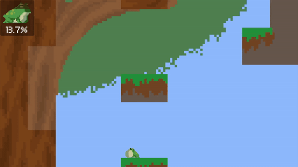
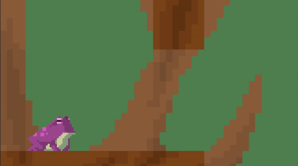
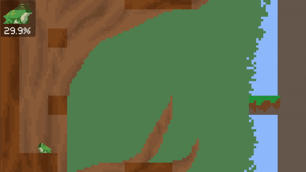
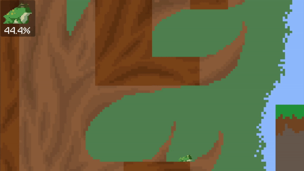
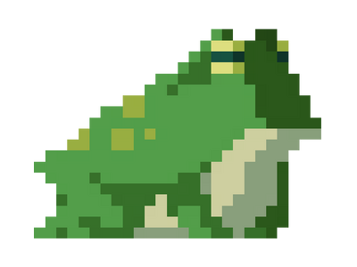

Development Journey
{{page.project}} is a Windows PC platformer created for Mini Jam 106 (themes: Frog and Limited Time). Heavily inspired by Jump King, the goal is simple: climb a tall tree and reach the princess waiting at the top. The execution, however, is intentionally punishing. Every jump is a commitment, every fall is costly, and every decision matters.
This was a solo project built within 72 hours, following the strict rules of the jam, including theme reveal only at the start. Planning, prototyping, designing, and finishing the game all had to happen inside the 3 day window.

Challenges
Building Jumping Jelly alone meant handling movement, level design, time mechanics, art, sound, and testing under extreme time pressure. With the theme revealed at the start of the 72 hour timer, every idea had to be validated fast.
To stay efficient, I created a detailed development plan Trello board on day one and followed it from start to finish. Despite the intensity, I completed and submitted the game with hours to spare, hitting the deadline successfully.
Game Jam
The Mini Jam rules enforced a strict 3 day development window. No preplanning, no prebuilt systems, and no early work allowed.
The themes Frog and Limited Time inspired a unique mechanic: a timer per screen, represented by a small time frog image in the top-left. As the player stays on a screen, the time frog gradually becomes transparent. If it fully fades out, the player is instantly reset to the start of the tree.
This system is admittedly unfinished and not well balanced, but I'm still proud of implementing something functional under such tight constraints. With more time, I would refine, redesign, or replace this mechanic entirely.

Player Movement
Movement is heavily inspired by Jump King:
- Hold Space to charge a jump
- Release Space to jump
- The direction you hold (A, D, or nothing) determines jump direction
- Once you jump, you’re committed sinces theres no midair control
- There is no jump strength indicator, by design, to increase difficulty
- Momentum inverts on wall impact, enabling intentional skill-based bounces
- There is no jump strength indicator, by design, to increase difficulty
The movement system was the main technical focus, and I'm proud of how it turned out.

Time System
- Each screen has a time frog, which acts as a timer that fades vertically
- The whole timer system is build visually without numbers, its just a frog!
- Switching screens resets the timer completely
- Timing out resets the player back to the start
It’s simple, rushed, and partially unfinished, but it fulfilled the jam’s theme constraints and added tension under time pressure.

Level & Map Design
The entire map is built as a vertical climbable tree. A logical and simple structure to design quickly. The game features several screens stacked vertically.
All of the jumps were carefully designed to create:
- Easy jumps
- Risky jumps
- Extremely punishing jumps
A key design element is a deliberate gap stretching from the top screen down to the very bottom. Crossing it is mechanically easy, but failure means dropping all the way back to the start. The first climb will take hours, while skilled players can complete the full climb in under 5 minutes!
The textures and visuals are very primitive. The entire map and background was made quickly in Aseprite. The frog sprite is an external asset from Pinterest and the music comes from OpenGameArt. Visual polish had to take a back seat to gameplay due to time constraints.

{{page.project}}
Itch.io PageOverview
{{page.project}} is a platformer created for Mini Jam 106 with the themes Frog and Limited Time. Try to climb to the princess at the top with high stakes and tension platforming!
Used Skills/Tools
Unity Engine
Core development
C# Programming
Game logic, movement, time system
Aseprite
Quick pixelarts
Trello
Game planning & organizing
Itch.io
Game hosting & jam submission